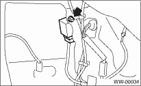
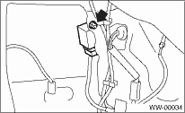

1. Disconnect the ground cable from the battery.
2. Remove the quarter lower trim RH. 
3. Loosen the nut to remove the control unit.

WIPER AND WASHER SYSTEMS > Wiper Control Relay
1. Disconnect the ground cable from the battery.
2. Remove the quarter lower trim RH.
3. Loosen the nut to remove the control unit.
